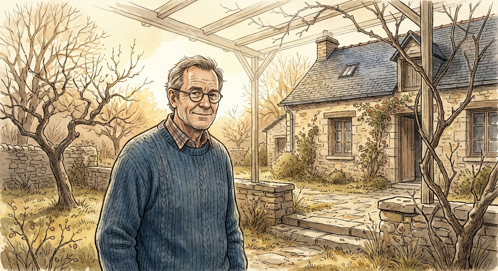
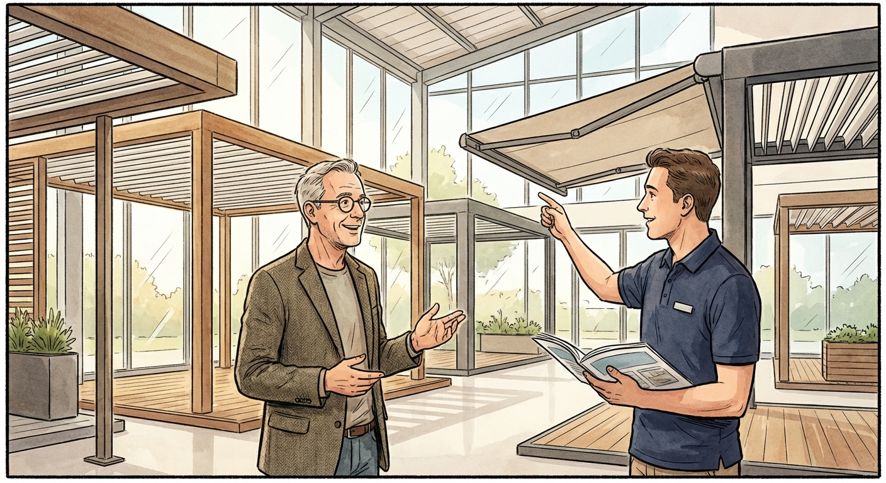
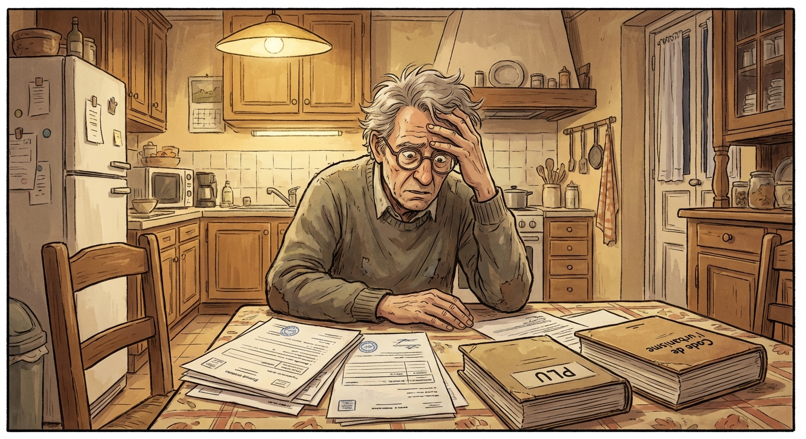
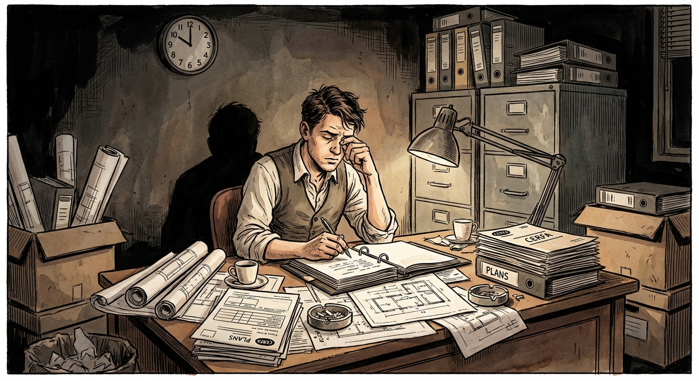
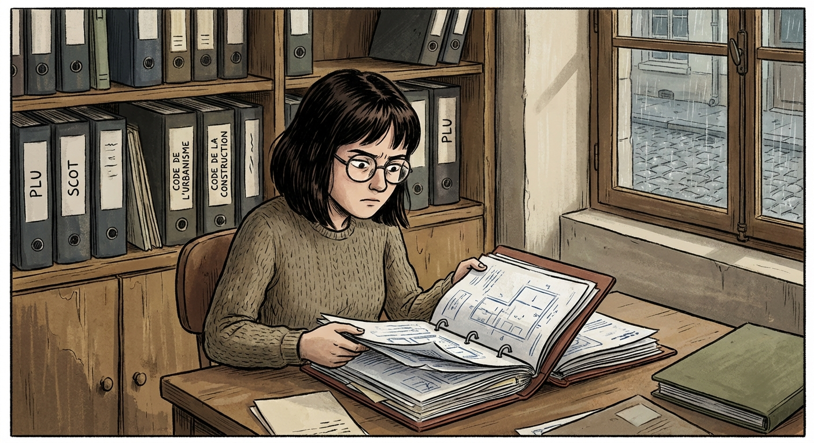
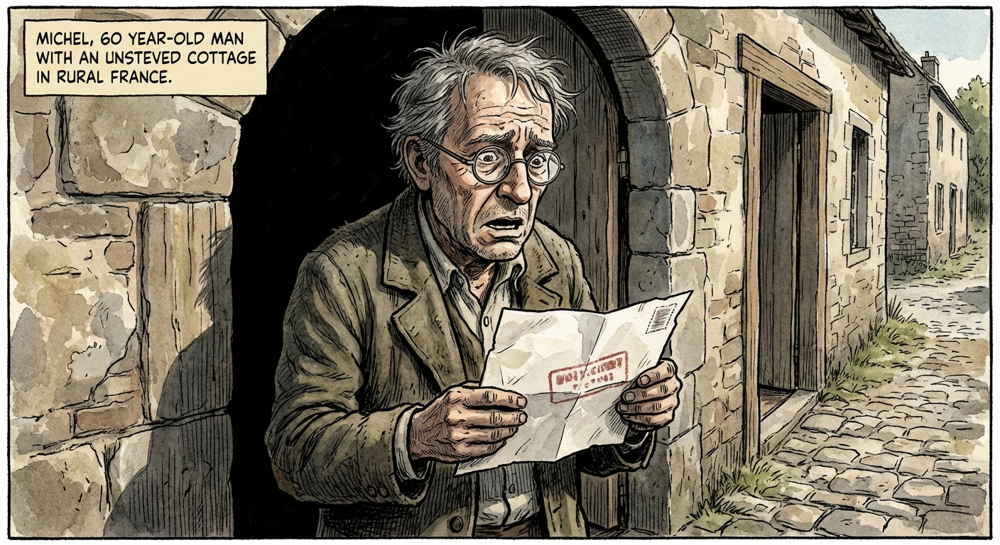
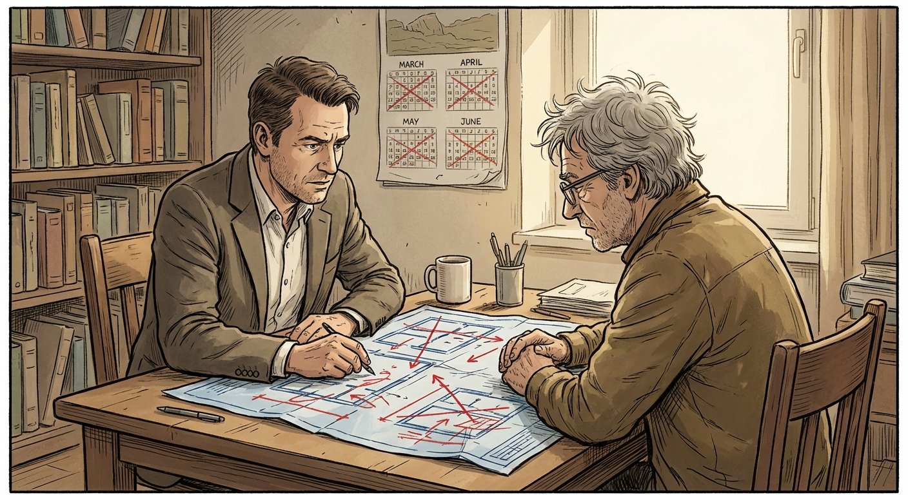
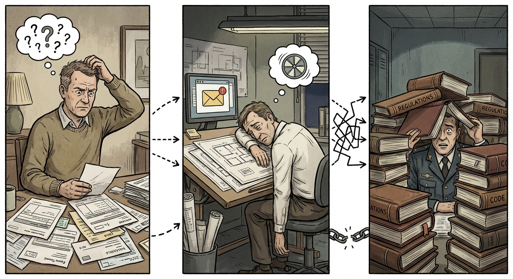
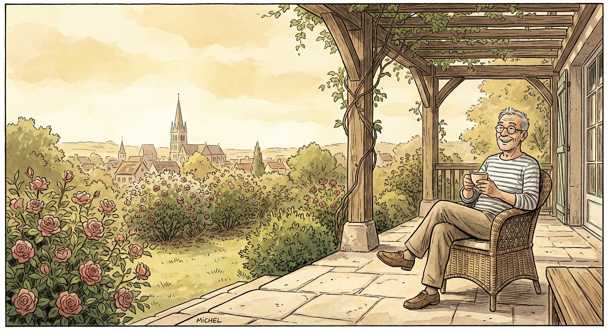

Quand un projet simple se transforme en parcours administratif complexe

Michel a 60 ans. Il vit à Rouen et est propriétaire de sa maison depuis de nombreuses années.
Un matin de février, alors qu'il profite d'un rayon de soleil dans son jardin, une idée lui vient : installer une pergola sur sa terrasse pour profiter pleinement de l'été.
Le projet lui paraît simple. Une petite structure, quelques poteaux, une couverture légère.

Michel se rend dans un showroom près de chez lui. Il rencontre Patrick, un professionnel qui installe ce type de structures.
Le devis est clair : pergola de 25 m², installation complète, 10 000 €. Pose prévue début mai.
Michel est ravi. Le projet semble simple, rapide et accessible. Il accepte le devis.

Mais très vite, une question apparaît : faut-il une autorisation d'urbanisme ?
Patrick lui explique qu'il faudra déposer une déclaration préalable de travaux auprès de la mairie.
Sans ça, le risque est réel : entre 1 600 € et 3 200 € du m² construit d'amende. Plus une taxe d'aménagement et une taxe foncière.
Michel découvre que même un projet modeste peut être soumis à de nombreuses obligations.

Le commercial de Patrick prépare le dossier. Formulaire CERFA, plan de situation, plan de masse, plans de façade, documents graphiques...
Ce n'est pas son travail, mais il n'a pas le choix. Entre deux et cinq heures de conception, parfois bien plus.
La déclaration est déposée au service urbanisme de la mairie. Michel pense que tout va suivre son cours tranquillement.

Le dossier arrive sur le bureau d'Inès, instructrice des autorisations du droit des sols.
Elle doit vérifier la conformité au regard du PLU, du SCOT, des servitudes d'utilité publique, des plans de prévention des risques, du code de l'urbanisme, du code de la construction, du code de l'environnement...
Au total, ce sont des milliers de pages de règles qui encadrent les projets de construction.

Le verdict tombe. Michel reçoit un courrier de la mairie : opposition à la déclaration préalable.
La couleur de la structure, la surface de la pergola, certaines règles du PLU non respectées...
Michel ne comprend pas. Patrick est surpris. Le projet semblait pourtant simple.

Patrick doit revoir le projet : ajuster les dimensions, modifier les aspects esthétiques, vérifier les règles du PLU.
Le projet est corrigé et présenté de nouveau.
Finalement, le 5 juin, la déclaration est acceptée. Mais plusieurs mois se sont écoulés depuis l'idée initiale de Michel.

C'est précisément ce que résout KUTSH.
Grâce à l'intelligence artificielle, KUTSH analyse en temps réel la conformité d'un projet au regard des règlements d'urbanisme, des documents de planification et des codes juridiques applicables.
Particuliers, professionnels et services instructeurs peuvent anticiper les problèmes avant même le dépôt.

Le moteur IA de conformité pour les autorisations d'urbanisme